Empezar
Di en Di es una hoja de personaje de D&D 2024 que se mantiene viva durante la partida: calcula el daño que recibes, recuerda tus condiciones, lleva tus recursos y te explica cada regla cuando la necesitas. Al abrirla por primera vez verás a Brakka Pielpétrea, una bárbara goliat de ejemplo para probarlo todo.
Instalarla
- Móvil o tablet Android: descarga el APK desde GitHub → Actions → la última ejecución → artefacto
di-en-di-apk. Descomprime el zip y abreDi en Di.apk. - Windows: descarga el artefacto
di-en-di-windowsy abreDi en Di.exe. Se abre la app en su propia ventana; deja abierta la ventanita negra mientras juegas. - Para crear tu personaje ve a Ajustes → Personajes → + Nuevo, o importa tu hoja (capítulo 13). Después usa 🎓 Origen y habilidades (capítulo 4) y la pestaña 🎨 Aspecto (capítulo 5).
Desde la versión 0.14.1 las versiones nuevas se instalan encima de la anterior sin perder nada. Si vienes de una versión anterior, hay que desinstalarla una última vez (se borran los datos): haz antes Ajustes → Copia de seguridad → Exportar todo. Para saber qué versión tienes, mira Ajustes → Acerca de.
La hoja de personaje
La pestaña Hoja tiene el diseño de la hoja oficial de 2024 y todo se edita tocando encima: nombre, características, competencias (el círculo junto a cada habilidad: vacío, competente, pericia), PG, dados de golpe, salvaciones contra la muerte, armas, rasgos, conjuros, equipo, monedas y retrato.
Arriba, la barra de vida muestra tus PG actuales y temporales sumados, por ejemplo 51/45 (45 + 6 temp.). Tócala para recibir daño, curarte o ganar temporales: la app aplica resistencias, inmunidades, temporales y la tirada de concentración.
Clase, subclase y multiclase
La clase se elige en un selector. Al cambiarla se ponen su dado de golpe, salvaciones, competencias, recursos, espacios de conjuro y rasgos; lo que hayas añadido a mano se conserva. La subclase muestra solo las de tu clase. Con ＋ Multiclase añades otras clases con su nivel: los espacios se calculan con la tabla de multiclase y los dados de golpe se ven mezclados (3d12 + 2d6).
Especie y linaje
Elige la especie y, si la tiene, su linaje: alto elfo, drow o elfo de los bosques; dracónido de cada color; gnomo de los bosques o de las rocas; la ascendencia gigante del goliat; el legado infernal del tiefling. Se aplican solos la velocidad, el tamaño, las resistencias (un dracónido rojo resiste el fuego), los rasgos y los trucos.
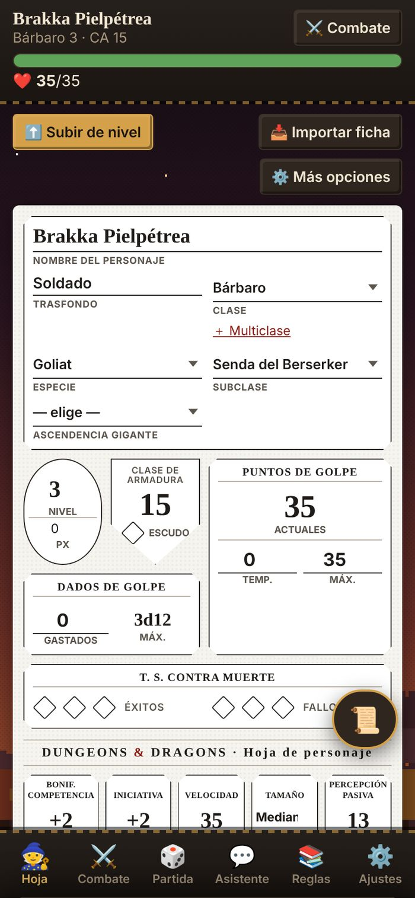
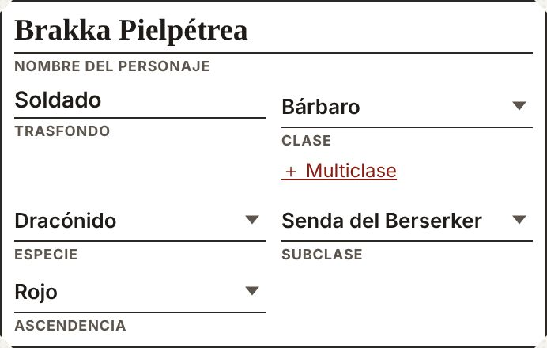
Rellenar la hoja a mano
Al escribir un conjuro o un rasgo aparece texto predictivo solo con lo que tu personaje puede tener ahora: lo de la lista de sus clases, de un nivel que pueda lanzar, de su subclase, de su especie y de las dotes disponibles.
Un mago de nivel 1 que escribe «fire» o «fue» ve Descarga de fuego, pero no Bola de fuego hasta que pueda lanzarla. Un guerrero no ve conjuros de mago. Al elegir una sugerencia se rellenan el nivel, el tiempo, el alcance, los componentes y si requiere concentración; en los rasgos, su texto y cómo se recuperan.
Sin escribir nada: el botón 📖 Disponibles de «Trucos y conjuros preparados» te enseña todos los conjuros que puedes tener según tus clases, nivel, subclase y especie, con filtro por nivel (Trucos, Nivel 1, Nivel 2…). Toca uno para leer qué hace y + Añadir para ponerlo en la hoja; salen también los que hayas quitado. Marca «Ver también los que conseguirás al subir de nivel» y aparecen los de niveles más altos con un 🔒 y el nivel al que los desbloqueas (por ejemplo, Bola de fuego: «Mago nivel 5»); la lista crece sola al subir de nivel. En «Rasgos de clase» hay el mismo botón con los rasgos de tu clase, las opciones que puedes elegir, los rasgos de tu especie y las dotes.
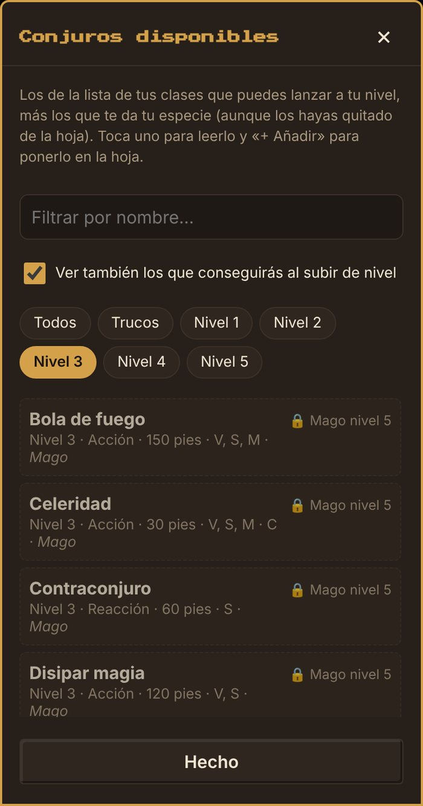
Cuántos puedes tener y cuántas veces lanzarlos
Debajo de la tabla verás Trucos 3/3 · Preparados 4/6: los que llevas frente a los que permite tu clase a tu nivel según las tablas de 2024 (un mago de nivel 1 tiene 3 trucos y 4 preparados; uno de nivel 10, 5 y 15). En Disponibles no puedes pasarte: los que sobran salen como «Máx. trucos». Si ya tenías de más, la hoja te avisa en rojo. Los conjuros de tu especie y los que marques como siempre preparado (dominio, juramento, patrón…) no cuentan.
Cada conjuro lleva un icono de usos: ♾️ truco a voluntad; ✨2/3🌙 espacios de su nivel que te quedan, que vuelven con un descanso largo; ✨1/2⛺ espacios de pacto del brujo, que vuelven con un descanso corto; 1×🌙 conjuro de tu especie, una vez gratis por descanso largo. Si no te quedan espacios, el icono sale en rojo; toca o mantén el dedo encima para leer el detalle.
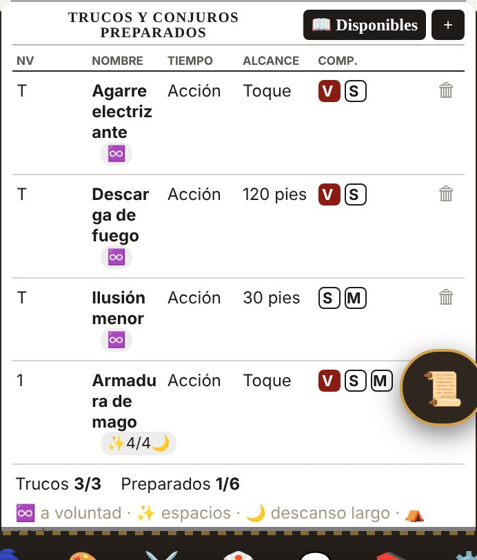
Si lo que buscas no está en la base de la app (tiene unos 85 conjuros habituales), escríbelo a mano igualmente.
Textos largos en grande
Los recuadros de texto de la hoja (atributos de especie, dotes, equipo, historia, idiomas…) tienen un botón ⤢ en la esquina que los abre a pantalla completa para leer y escribir cómodamente. ✓ Listo vuelve a la hoja.
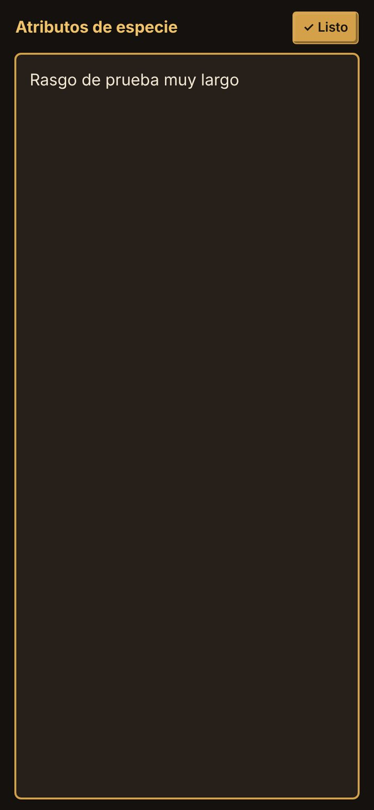
Borrar con la papelera
Cada rasgo, arma y conjuro tiene una papelera 🗑 a la derecha. Antes de borrar, la app pregunta «¿Seguro que quieres borrar…?»: pulsa Borrar para confirmarlo o Cancelar si te has equivocado. Lo mismo pasa con la munición y los consumibles.
Componentes y recargas
Los conjuros muestran sus componentes como en el manual: V verbal (tienes que poder hablar), S somático, M material, más C de concentración y R de ritual. Los rasgos llevan su recarga: ⛺ descanso corto, 🌙 descanso largo, ✨ espacio de conjuro o ♾️ a voluntad.
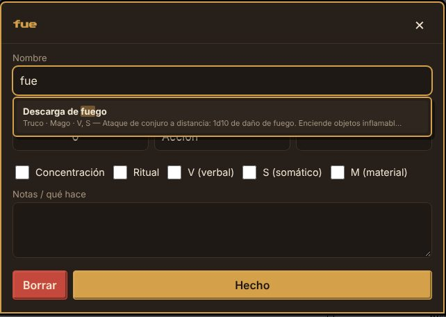
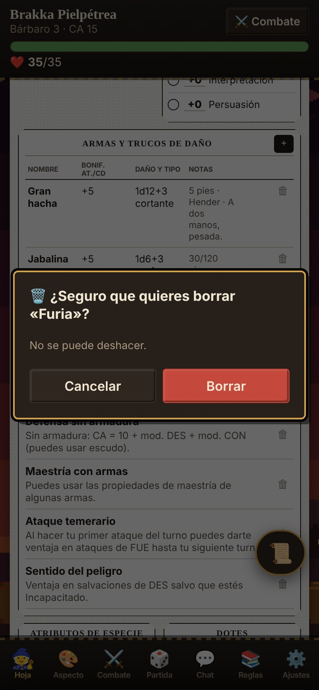
Origen y habilidades (nivel 1)
En la hoja, el botón 🎓 Origen y habilidades (resaltado mientras tu personaje es de nivel 1) te guía por las elecciones de creación de las reglas 2024. Solo aparecen las opciones que puedes escoger según tu clase, tu trasfondo y tu especie:
- Trasfondo: al elegirlo ves las dos habilidades que te da, su herramienta, su dote de origen y entre qué características repartes +2/+1 o +1/+1/+1.
- Habilidades de clase: solo las de la lista de tu clase y en el número correcto (2 el bárbaro, 3 el bardo y el explorador, 4 el pícaro…). El contador te dice cuántas llevas.
- Especie: el elfo elige una entre Perspicacia, Percepción y Supervivencia, y el humano una cualquiera.
- Extras de clase: pericia del pícaro, estilo de combate del guerrero, orden divina del clérigo u orden primigenia del druida. Si eliges el trasfondo con la dote Habilidoso, también tres habilidades más.
Conflictos
Si una habilidad ya te la da otra fuente, aparece tachada con el motivo («ya por trasfondo») y no puedes escogerla dos veces: tienes que elegir otra. Si la tenías marcada antes de cambiar de trasfondo, se marca en rojo y aparece en ⚠️ Conflictos hasta que la cambies.
Al pulsar ✓ Aplicar a la ficha la app te pide confirmación y pone las competencias, el trasfondo, la herramienta, la dote y los rasgos elegidos.
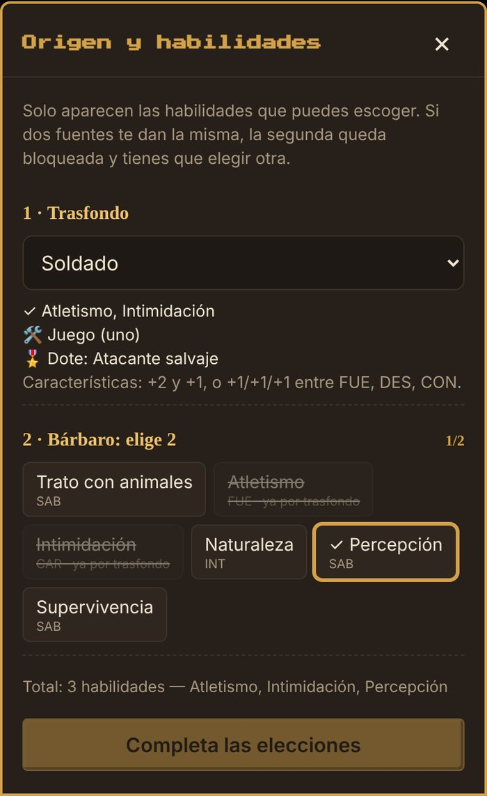
Aspecto y retrato
La pestaña 🎨 Aspecto es el editor de personaje. Arriba lo ves de cuerpo entero, al estilo de la fantasía oscura de los 90: luz lateral cálida, sombras profundas, grano y uno de los pósteres de la app como fondo. Se redibuja mientras eliges:
- Cara: 10 rostros (noble, curtido, joven, severo, anciano sabio, pícaro, feroz, sereno, marcado, bonachón), color de ojos y rasgos de especie: orejas puntiagudas, cuernos, colmillos, cabeza de dragón y aureola.
- Cuerpo: 10 complexiones y el color de piel o escamas.
- Pelo: 10 peinados, 6 barbas y su color.
- Ropaje: 10 por clase, cada uno con su arma y su tocado, en tres colores (principal, capa y pantalón, detalles). Puedes mirar los de otras clases o quitar el tocado.
- Fondo: los ocho pósteres (ocaso de sangre, ruinas del bosque, puerta de los reyes enanos, abismo estelar, mar del kraken, mazmorra, ciudadela del desierto y cripta).
Cada parte se cambia con las flechas ◀ ▶ o tocando su nombre; los colores tienen muestras y una casilla 🌈 para cualquier otro. 🎲 Aleatorio propone uno nuevo y ↺ Según especie y clase vuelve al inicial.
Al pulsar 🖼️ Usar como retrato, la hoja recibe solo el busto (cabeza, hombros y pecho) y la barra de arriba, la cara. Más abajo apuntas edad, altura, peso, ojos, pelo, piel y una descripción. Si prefieres una foto o un dibujo tuyo, puedes seguir subiendo una imagen.
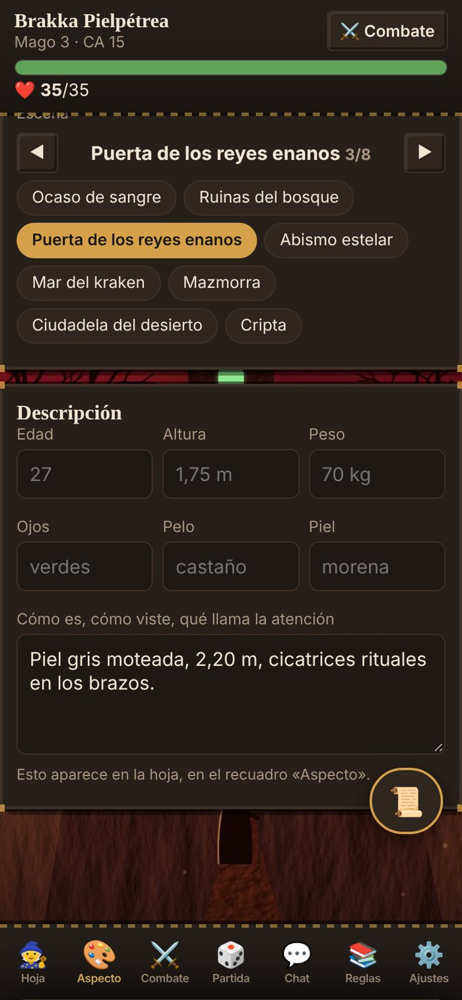
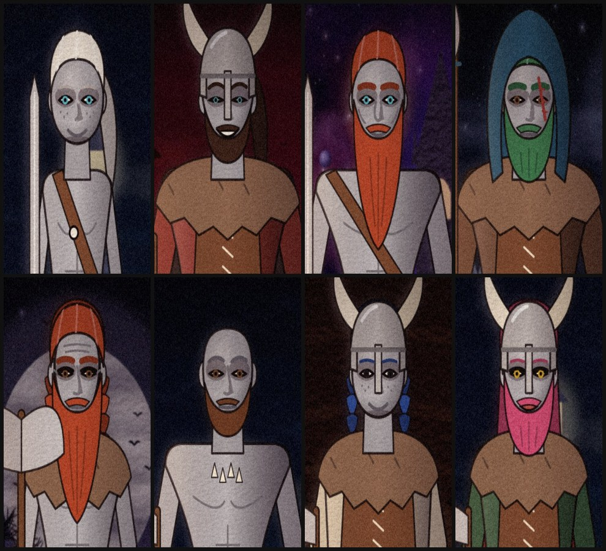
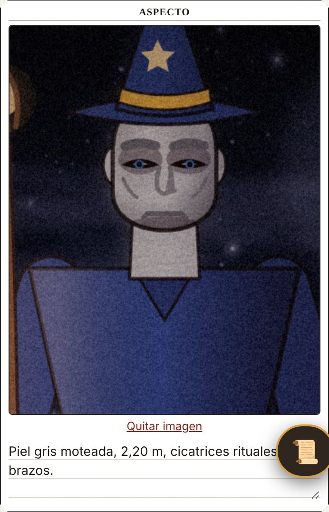
Saber qué hace cada cosa
Mantén pulsada 1,5 segundos cualquier habilidad, salvación, característica, arma, conjuro, rasgo, recurso o condición. Aparece una burbuja con lo que hace y con lo que te limita ahora mismo: ventaja o desventaja por tus condiciones, los espacios que te quedan, la concentración que perderías, que en Furia no puedes lanzar conjuros…
Con un toque corto en un conjuro o rasgo se abre su descripción completa con un botón para editarlo. En las características y habilidades, el toque muestra cómo se calcula tu bonificador; tirar el dado al tocar es opcional (capítulo 13).
La pestaña Reglas tiene buscador de condiciones, habilidades, acciones, reglas clave, maestrías de armas y efectos.
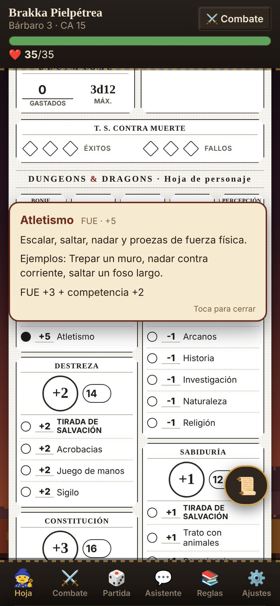
Avisos de la ficha
Encima de la hoja, un panel avisa de lo que falta o no cuadra con las reglas 2024: falta la clase, la especie o el trasfondo; salvaciones que no son las de tu clase; PG imposibles; puntuaciones de más de 20; conjuros de nivel demasiado alto; competencias de armas, armaduras o herramientas que tu clase te da y no están marcadas; armas marciales sin competencia; PX suficientes para subir de nivel.
Cada aviso explica el motivo. Muchos tienen 🔧 Corregir, que lo arregla solo, y todos se pueden Ignorar para que no vuelvan a salir (y restaurar después).
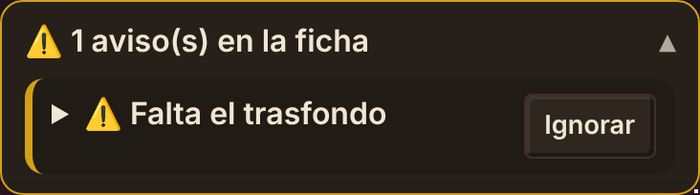
Subir de nivel
Pulsa ⬆️ Subir de nivel en la hoja. Tras la transición «¡SUBES DE NIVEL!» se abre una pantalla con todo lo que corresponde a tu clase en el siguiente nivel según las reglas 2024:
- ¿En qué clase subes? Tu clase, otra de tu multiclase o una nueva (avisa si no tienes 13 en la característica que pide).
- Puntos de golpe: media fija o tirada (la escribes o la tira la app).
- Lo que ganas: los rasgos nuevos, explicados.
- Lo que eliges: subclase, mejora de característica o dote, don épico, estilo de combate, pericias, metamagia, invocaciones, opciones de clase y conjuros nuevos de tu lista.
Abajo, el resumen enseña cómo quedará la ficha (PG 35 → 45, características, competencia, espacios, recursos) y qué rasgos y conjuros se añaden con su recarga. Al pulsar LVL UP se actualiza todo.
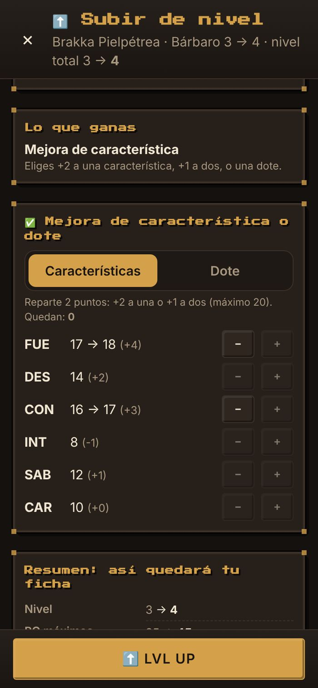
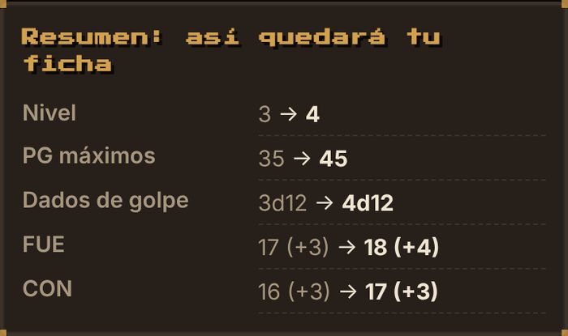
Combate en solitario
La pestaña Combate sirve para llevar tu turno aunque no uséis la partida compartida. Al pulsar ¡Empezar combate! salta la transición y la app te pregunta tu iniciativa (la escribes o la tira por ti; nunca sola).
- Orden de iniciativa en burbujas: añade compañeros y enemigos y arrástralos para reordenar. Los enemigos empiezan con vida «?» y se va sumando el daño que reciben.
- Tu turno: anota «He pegado», «He curado» u «Otra acción»; en el turno de los demás, si han pegado, curado o recibido daño. Sin dados (en Ajustes puedes escribir la tirada).
- Casillas de acción, acción adicional y reacción, movimiento restante, conjuros con sus espacios, recursos, efectos con duración y una chuleta de las acciones 2024.
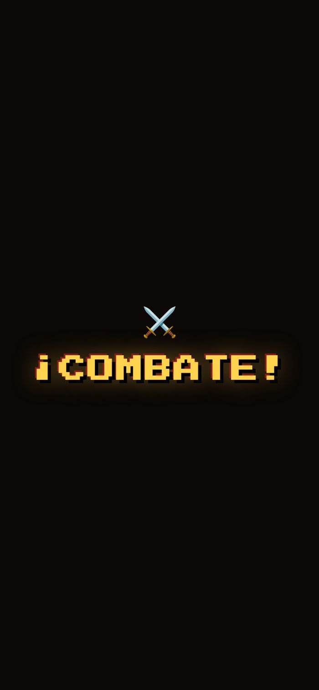
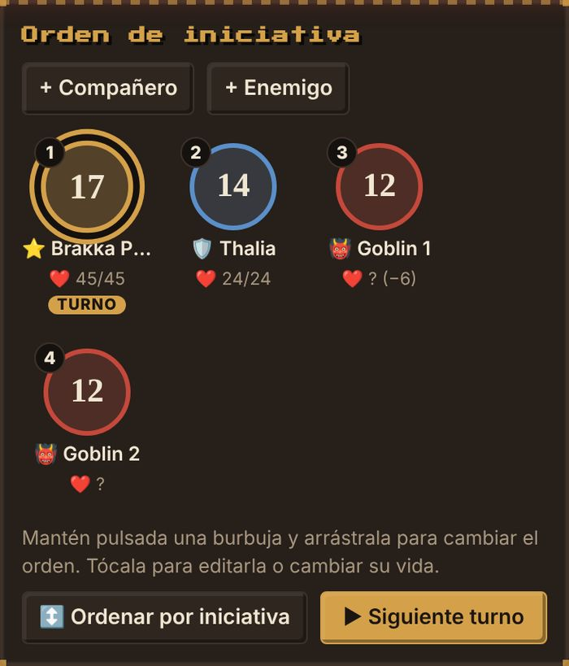
Munición y consumibles
En la hoja, debajo del Equipo, apunta tu munición y consumibles con su cantidad. Si tu equipo dice «carcaj con 20 flechas, 2 pociones de curación», la app te ofrece añadirlos directamente.
Normalmente la lista solo muestra lo que llevas. Pulsa ✏️ Editar para añadir, sumar o restar y borrar, y ✓ Listo para guardarlo y volver a la vista normal.
En combate (también en la partida compartida) pulsa ✓ Usar 1 cada vez que gastes uno. Al terminar el combate se aplican las reglas 2024: recuperas la mitad de la munición gastada (redondeando abajo), recoges las armas arrojadizas y los consumibles quedan gastados.
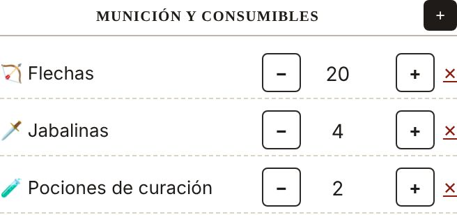
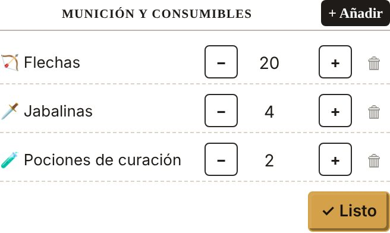
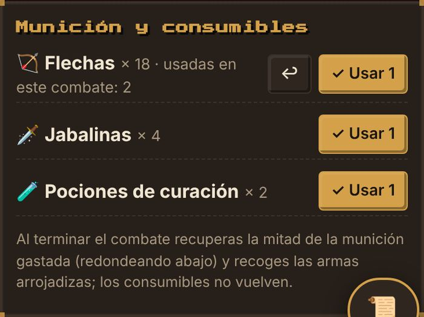
El asistente
En la pestaña Asistente escribe o dicta lo que pasa en la mesa y la app lo aplica a tu ficha con las reglas: «un goblin me ha hecho 7 de daño cortante», «me curo 2d4+2», «me lanzan Bendición», «gasto un espacio de nivel 2», «descanso largo». Explica cada paso del cálculo y se puede deshacer.
Funciona sin internet. Si añades una clave de Claude en Ajustes, entiende también frases más libres.
Diario, voz y kill count
El botón 📜 abre el diario desde cualquier pantalla. Tiene carpetas (Nombres, Lugares, Misiones, Objetos, Crónicas y las que crees) y notas rápidas.
Grabar sesión: deja el móvil en la mesa y la app transcribe lo que se dice. Al parar, puedes corregir la transcripción y guardarla tal cual o, con una clave de Claude, convertirla en una crónica escrita como un relato.
Kill count: los enemigos a los que tu personaje da el golpe final se apuntan solos, en el combate de la app y en la partida compartida. Si el DM deshace ese turno, la baja se quita. Solo cuentan tus bajas; también puedes añadirlas a mano.
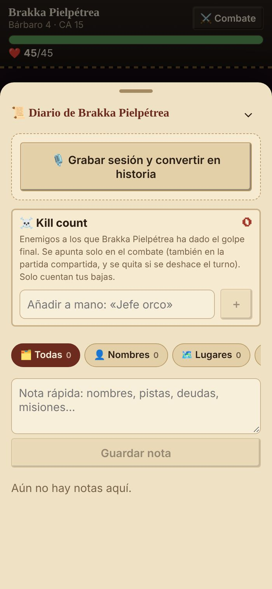
Importar una ficha
En la hoja, 📥 Importar ficha lee tu hoja de papel o digital sin escribirla a mano:
- PDF rellenable de la hoja oficial 2024: se lee casi perfecto.
- Word o texto pegado («FUE 15, CA 14, Clase: Pícaro»).
- Fotos o PDF escaneados con OCR dentro del móvil; revisa después las competencias.
Todo se hace sin conexión y gratis. Con una clave de Claude, las fotos se leen mejor. Los términos se traducen al idioma de la app (equipo, idiomas, conjuros, rasgos) y siempre ves una vista previa con los avisos antes de crear el personaje o reemplazar el actual.
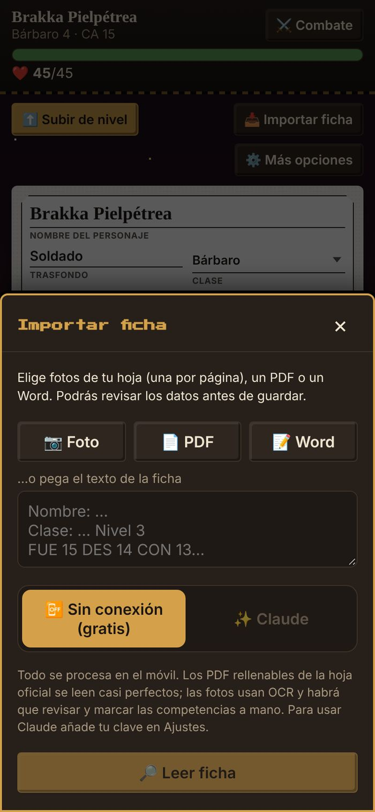
Partida compartida
El DM ejecuta un pequeño servidor en su PC y todos jugáis el mismo combate desde la app o el navegador. Las fichas siguen en cada móvil; a la partida solo se envía un resumen (vida, CA, percepción pasiva, condiciones, concentración).
Montar el servidor (DM, Windows)
- Abre
Di en Di - Servidor.exe(del artefactodi-en-di-windows). Si Windows avisa: «Más información» → «Ejecutar de todas formas»; si el firewall pregunta, permite las redes privadas. - Se abre tu pantalla de DM en el navegador. La ventana negra muestra el código de la partida, la clave del DM y la dirección para la Wi-Fi de casa (
http://192.168.x.x:3000). - A distancia (sin Cloudflare, que en España se bloquea durante el fútbol): instala Tailscale, ejecuta
tailscale funnel 3000y comparte la direcciónhttps://….ts.net. Los jugadores no instalan nada. - Para dirigir desde el móvil o la tablet: pestaña Partida → dirección → «Soy el DM» → clave del DM.
Jugar como jugador
En Partida escribe la dirección y el código y pulsa Unirse. Cuando el DM empieza un combate salta «¡COMBATE!» y llega la preparación: pones tu iniciativa y tu vida, ves las de tus aliados y pulsas ✅ ¡Listo! (se puede quitar si te equivocas). Cuando todos y el DM están listos, empiezan los turnos con «¡A LUCHAR!».
En tu turno anota Daño hecho, Curación, Daño recibido u Otra acción. Con Varios objetivos aplicas daño en área: toca cada objetivo una vez para el daño entero y otra para «½» si superó la salvación.
De los monstruos ves «?» y su estado: Ileso Herido 🩸 Ensangrentado 💀 Derrotado. Si un monstruo te pega, el daño se aplica en tu ficha con tus resistencias y temporales.
Si alguien se equivoca, Deshacer último turno revierte sus daños y curaciones, también en las fichas. Lo puede hacer el DM o el jugador cuyo turno se deshace. Todo queda en el registro del combate, que puedes guardar en el diario.
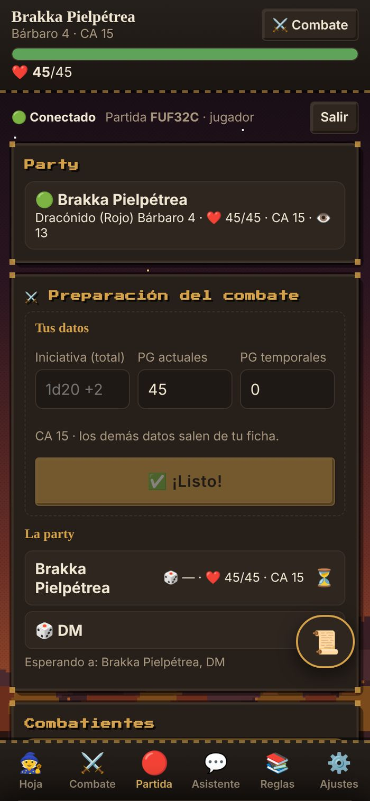
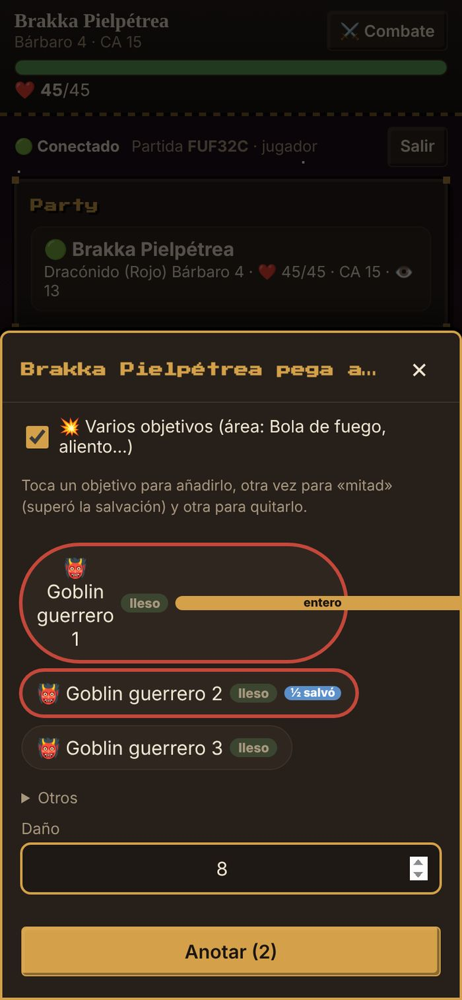
Pantalla del DM
Desde el PC o desde la tablet el DM ve la vida exacta, la CA y las notas de todo, y lo organiza sin que lo vean los jugadores:
- Monstruos del SRD 5.2 con buscador; grupos («3 goblins») con PG medios o tirados e iniciativa automática.
- Ocultos: no llegan a los móviles de los jugadores hasta que los revelas.
- Personajes (pestaña propia en modo DM): aliados y enemigos de la campaña con nivel o VD, vida, CA, iniciativa y notas, listos para meterlos en el combate.
- Condiciones con duración por criatura, que bajan solas al acabar su turno; contadores como acciones legendarias (vuelven en su turno) y resistencias legendarias.
- Dificultad del encuentro con el presupuesto de PX de 2024, y quién se está concentrando o haciendo salvaciones contra la muerte.
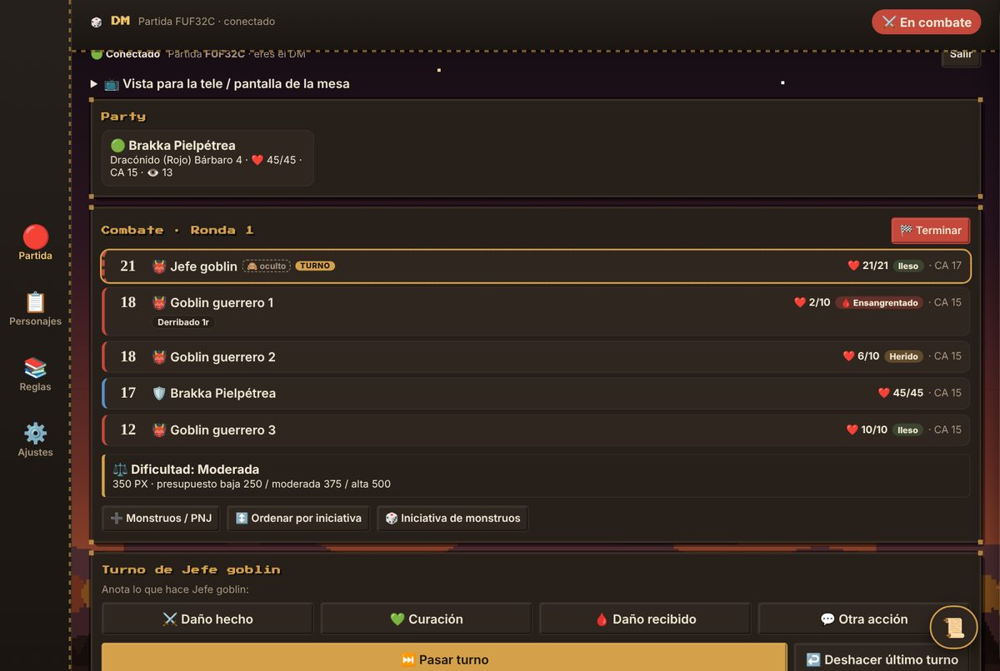
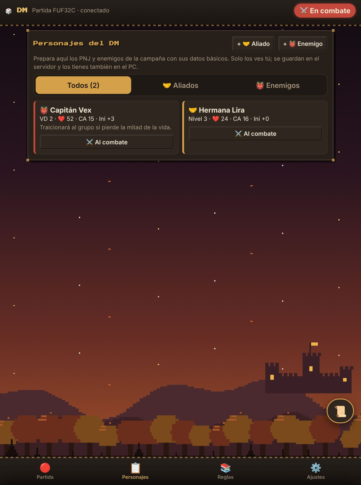
Vista para la tele
En la pantalla del DM, 📺 Vista para la tele da un enlace (…/?view=CÓDIGO) para abrir en una tele, un portátil o una tablet en la mesa: el orden de turnos, los estados y lo último que ha pasado, en grande y sin nada oculto.
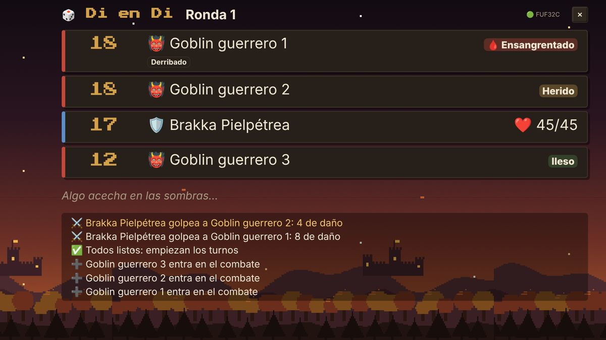
Colores, idioma y ajustes
En Ajustes eliges entre cuatro paletas. Cada una pone de fondo un póster de fantasía oscura al estilo de los 90, sin títulos:
| Paleta | Póster |
|---|---|
| Básico | Ocaso de sangre: la torre del nigromante sobre un risco, árboles muertos, cuervos y un dragón |
| Verdoso | Ruinas del bosque: un arco antiguo cubierto de musgo con runas y un druida con el báculo encendido |
| Grises | La puerta de los reyes enanos tallada en la montaña nevada, con braseros y un dragón bajo la luna |
| Azules | Abismo estelar: una catedral de dos torres sobre un cañón, bajo una nebulosa |
Hay cuatro pósteres más (mar del kraken, mazmorra, ciudadela del desierto y cripta) que puedes usar de fondo en el retrato.
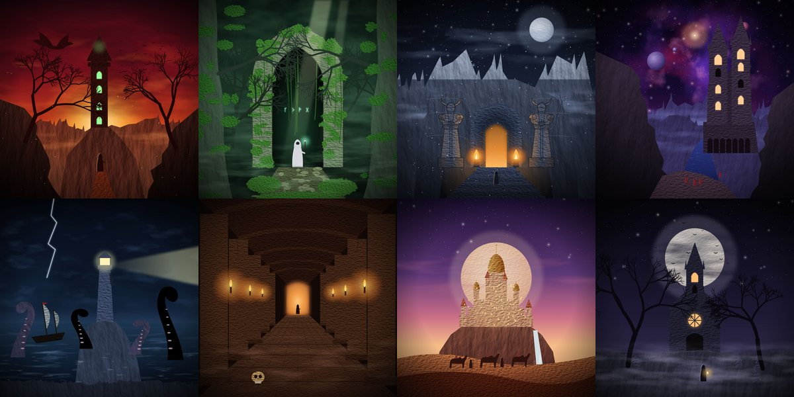
También en Ajustes: idioma (español o inglés, toda la app), tirar dados al tocar una estadística (desactivado por defecto), anotar tiradas a mano en combate, traducir la ficha, el idioma del dictado y la clave opcional de Claude.
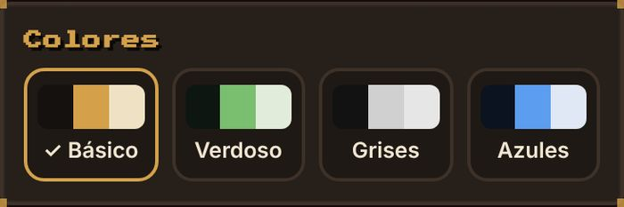
El manual dentro de la app
Al final de Ajustes, 📖 Abrir el manual abre esta misma guía a pantalla completa, sin necesidad de internet. Ciérrala con ✕ Cerrar.
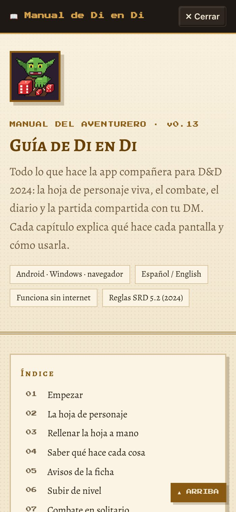
Copia de seguridad
Ajustes → Copia de seguridad guarda tus fichas con todo su progreso y su diario en un archivo. En Android se guarda en Documentos/DiEnDi y se abre el menú Compartir para enviarlo a Drive o al correo.
Restaurar copia permite añadir las fichas (las que ya tienes se actualizan) o reemplazarlo todo. Sirve para reinstalar sin perder nada o para pasar tus personajes a otro móvil o al PC.
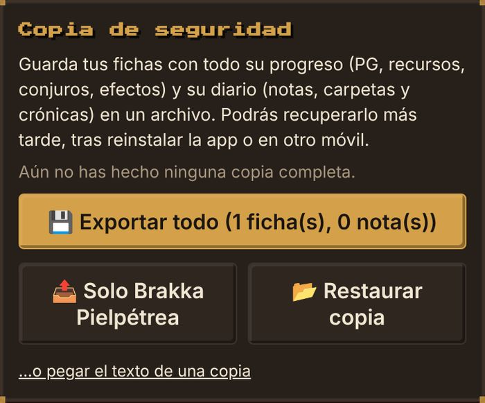
Dudas frecuentes
Google Play Protect bloquea la instalación
Es normal en un APK que no viene de la tienda. En el aviso pulsa «Más detalles» → «Instalar de todas formas».
Un enemigo tiene la vida «?» y no sé si ha caído
Toca su burbuja (en solitario) o su fila (el DM) y escribe sus PG máximos cuando los sepas; la app ya lleva la cuenta del daño recibido. Sin vida máxima no puede contar el golpe final para el kill count.
Mi conjuro no aparece en las sugerencias
La app tiene los conjuros más habituales del SRD 5.2. Escríbelo a mano y añade en notas lo que hace: al mantenerlo pulsado verás tus notas y sus límites.
Los jugadores no pueden conectar
Comprueba que la ventana del servidor sigue abierta, que estáis en la misma Wi-Fi (o que Tailscale Funnel está activo) y que la dirección incluye el puerto :3000 en la red de casa.